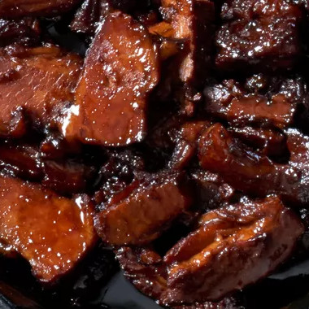

Chinese Braised Pork Belly
Description
This dish is called red-cooked pork, or hong shao rou in Mandarin. It's delicious served on steamed buns or over rice. Caramelized sugar, star anise, and sherry give the braising liquid a complex flavor, and a combination of soy sauce and molasses gives the finished sauce its rich, mahogany color. Serve on steamed buns (such as Andrea's Steamed Buns on this site).
Ingredients
- 3 pounds skinless pork belly
- 1 tablespoon canola oil
- ⅓ cup white sugar
- 2 tablespoons white sugar
- 4 cups water, or more if needed
- 5 large green onions, diagonally cut into 2-inch pieces
- 8 cloves garlic, smashed
- ½ cup fino dry sherry
- ½ cup reduced-sodium soy sauce
- 2 tablespoons dark molasses
- 8 whole star anise
- 1 cucumber, thinly sliced
- 1 green onion, thinly sliced
Steps
- Cut pork into eight 2x3-inch pieces.
- Heat oil in a 6-quart Dutch oven over high heat. In 2 batches, sear pork, fat sides first, until light golden, 30 to 60 seconds per side. Transfer to a plate. Pour out all but 1 to 2 tablespoons of the drippings.
- Add 1/3 cup sugar to pot; melt, stirring if needed, over medium-high heat. Cook until a light caramel color, about 1 minute. Reduce heat to medium, then return pork to pot, turning pieces to coat. When sugar darkens to an orange color, after about 1 minute, add water; stir to loosen any sugar stuck to the bottom.
- Add green onions, garlic, sherry, soy sauce, molasses, star anise, and remaining 2 tablespoons sugar. If needed, add up to 1/2 cup additional water to nearly cover pork. Bring to a boil, then reduce heat to medium-low. Simmer, covered, turning occasionally, until a knife inserted 1/4 inch into the fat layer meets little resistance, about 1 hour and 45 minutes.
- Transfer pork to a plate with a slotted spoon; loosely cover. Skim fat and drain solids from cooking liquid. Return 4 cups liquid to pot and bring to a boil; simmer over medium-high heat until reduced to about 1 cup, about 30 minutes. Sauce will thicken more as it cools.
- Slice pork into twenty-four 1/2-inch-thick pieces. Working in batches, warm pork with half the sauce in a large nonstick skillet over medium to medium-high heat. Turn pork frequently to coat and, if desired, let sear slightly. Garnish with cucumber slices and sliced green onion.